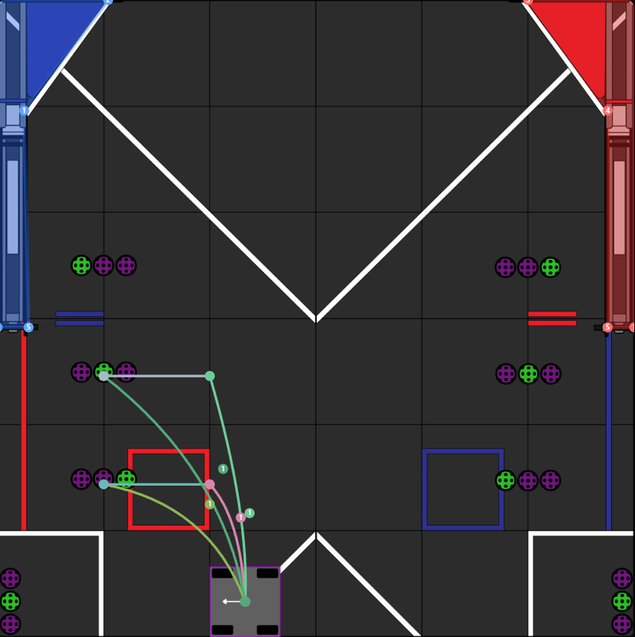

From V1 to V2 - Camera, Auto Path, and Code Development
We used the Limelight camera for vision and target detection. We programmed it to recognize AprilTags and accurately determine distance. The system sends target coordinates to the controller to adjust turret angle and shooter speed.

"The transition from V1 to V2 was based on the idea: 'Reducing sensor dependency and increasing response speed'"